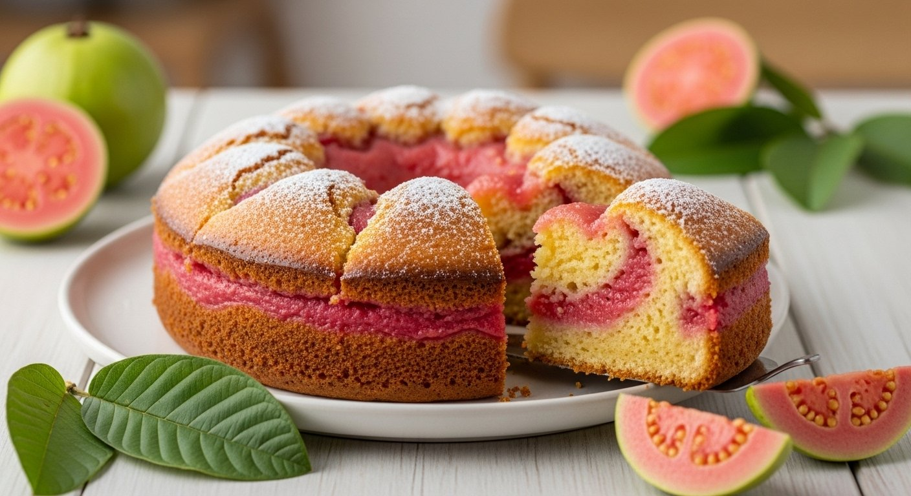

Doces · Tortas e bolos
Bolo gelado de goiaba

Ingredientes
- Sorvete: 3 gemas, 1 xícara de açúcar, 1 xícara de leite morno, 500 ml suco de goiaba, 1/2 xícara de chantilly
- Rocambole: 4 gemas, 1/2 xícara de açúcar, 4 claras, 2/3 xícara de farinha, sal, 400 g de doce de goiaba em pasta
Modo de preparo
- Prepare o sorvete batendo gemas com açúcar e leite morno; incorpore suco e chantilly; congele batendo uma vez.
- Faça dois rocamboles finos; recheie com goiaba, enrole e refrigere fatias.
- Forre tigela com fatias, encha com sorvete, cubra e congele.
Observação
Rendimento: 10–12 porções. Pode usar sorvete industrializado.